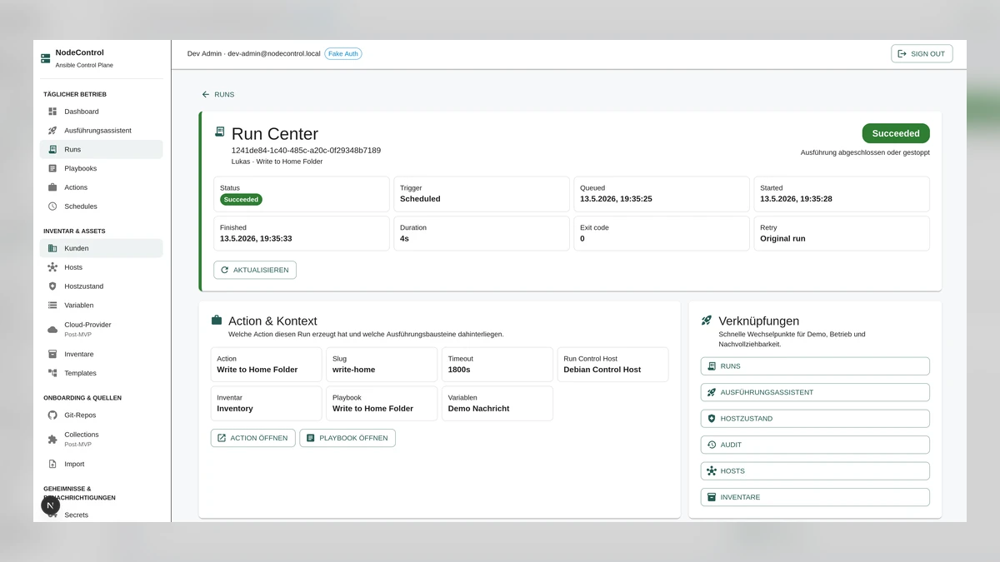

Persönlich
Eigener Name, nachvollziehbarer Werdegang, echte Projekte. Kein erfundener Erfolgsnachweis.
UX / UI · Komponentenreferenz
Blackline / Lukas Stumpfel
Ein gemeinsames Designsystem für ein persönliches Software-Engineering-Portfolio — und eine konkrete Arbeitsreferenz für jede weitere Änderung.
Anthrazit, ein warmer Akzent und eine ruhige Bildkomposition geben der Seite Charakter. Offene Projektzeilen, lesbare Inhalte und klare Wege zu GitHub und Kontakt tragen die Gestaltung.
Eigener Name, nachvollziehbarer Werdegang, echte Projekte. Kein erfundener Erfolgsnachweis.
Ein Akzent, wenige Radien, definierte Hierarchien. Jede Farbe hat eine feste Aufgabe.
Klare Bezeichnungen, sichtbarer Fokus und mindestens 44 Pixel große Ziele für Bedienelemente.
Semantische Token und gemeinsame Grundbausteine statt einzelner fest codierter Stilwerte.
Die umgesetzte Portfolio-Gestaltung samt allen vorhandenen Abschnitten und Bedienelementen. Interaktive Demonstrationen sind ausdrücklich als Beispiele markiert. Kontaktformulare, Konten, Bezahlung, Dashboards und neue Produktfunktionen gehören nicht zum Portfolio-Umfang.
Farbsystem & Lokalisierung
„Dunkel“ ist die erste Ansicht ohne gespeicherte Präferenz. „Hell“ verwendet warme helle Flächen, dunkle Schrift und das orangefarbene Motiv von Pawel Czerwinski. „Dunkel“ zeigt das schwarze Motiv von Milad Fakurian. Inhalt, Layout und Informationsrang bleiben gleich.
Aktive Ansicht: Dunkel
Anthrazit und ein warmer Lichtakzent.
C# / .NETRuhige helle Flächen mit dunkler Schrift.
C# / .NETdark | light gespeichert. Es gibt genau zwei konkrete Themes.
data-theme-choice hält die Auswahl, data-theme die
dargestellte Palette.
portfolio-theme. Diese Referenz speichert getrennt
unter blackline-styleguide-theme.
/, Deutsch unter /de/.hreflang; die aktuelle Sprache trägt
aria-current="page".
Ausgewählte Projekte
Ausgewählte Arbeiten zu Backend, Desktop, verteilten Systemen und Security-nahen Themen.
Projekte ansehenGemeinsame Quelle
In Komponenten immer die semantische CSS-Variable einsetzen. Rohfarben sind die Palette hinter dem System; sie werden nicht direkt in neue Komponenten kopiert. Die angezeigten Werte reagieren auf das ausgewählte Theme.
Tokenquelle wird geladen.
Ein Klick auf „Variable kopieren“ kopiert den vollständigen CSS-Ausdruck, zum Beispiel
var(--color-accent).
Die Farbrollen beschreiben die Bedeutung. Schrift, Maße und Bewegung ergänzen das visuelle Vokabular. Werte werden aus der eingebundenen Token-CSS gelesen.
| Variable | Aktueller Wert | Verwendung | Kopieren |
|---|
Diese Werte werden aus ../design/tokens.js gelesen. Dieselbe Quelle ist
als tokens.json verfügbar. Der Pfad
bezeichnet die Position in den Daten; nur ausdrücklich angegebene CSS-Variablen sind
öffentliche Schnittstellen.
| Pfad / Name | Wert |
|---|
Lesen vor Dekoration
Geist trägt Fließtext, Navigation und Überschriften. Geist Mono ist für kurze
Metadaten, Zeiträume und Technologiebezeichnungen reserviert. Beide Schriften liegen
lokal unter /fonts/; es wird kein externer Fontdienst geladen.
--font-family-sans / Geist
Software mit System.
Aa Bb Cc 0123456789
--font-family-mono / Geist Mono
C# / .NET / Linux
Docker · Kubernetes
09/2026 — heute
h1 pro Sprachseite: der Name im Hero.h2; Projekttitel und Unterthemen
sind h3.
--line-height-heading für Titel; --line-height-body für
Text; --line-height-label für kurze Labels.
--size-prose und erhält klare
Absatzabstände.
overflow-wrap.
Rhythmus & Maße
Die Basis ist ein Viertel-Rem. Eng verwandte Inhalte stehen näher beieinander als eigenständige Themen. Große Freiräume strukturieren die Seite; sie werden nicht mit zusätzlichen Karten gefüllt.
--radius-small0.25rem
Labels, feine Kontrollflächen.
--radius-medium0.5rem
Buttons und kompakte Gruppen.
--radius-large0.75rem
Bildrahmen und größere Flächen.
--size-touch: 2.75rem · mindestens 44 × 44 CSS-Pixel bei
Standard-Schriftgröße.
--size-icon: 1.125rem · einheitliche Strichstärke, dekorative Icons
mit aria-hidden.
--size-content-max: 76rem · zentraler Seitencontainer.--size-prose: 42rem · ausführliche Absätze.--size-header: 4.75rem · Grundhöhe für Ausrichtung und Ankerabstand.
Eine Karte nutzt --color-surface, eine feine Kontur und den
zurückhaltenden --shadow-card. Schatten sind keine alleinige
Zustandskennzeichnung.
--motion-fast: 150ms für kleine Zustandsänderungen,
--motion-normal: 240ms für ruhige Übergänge. Bei reduzierter Bewegung
entfallen dekorative Animation und sanftes Scrollen.
Responsive Verhalten
Mobile erhält dieselben Inhalte und Aktionen. Die Reihenfolge im Dokument bestimmt den Lesefluss; CSS verändert nur die passende Anordnung. Inhalte werden nicht zur vermeintlichen Vereinfachung versteckt.
| Bereich | Unter 40rem / 640px | Ab 40rem / 640px | Ab 64rem / 1024px |
|---|---|---|---|
| Header | Marke, Sprache, Theme und natives aufklappbares Menü. | Weiterhin mobiles Disclosure-Menü; mehr Platz zwischen den Kontrollen. | Horizontale Hauptnavigation, mobiles Menü ausgeblendet. |
| Hero | Text und Aktionen führen; art-direktierter Bildausschnitt. | Mehr Raum für Überschrift und Aktionszeile. | Große Komposition aus Typografie und abstraktem Bild. |
| Projektzeile | Vorschau, Name, Beschreibung, Technologien und Repository-Link in einer Spalte. | Bild und Text nebeneinander, wenn beide lesbar bleiben. | Klare Bild-/Textverteilung und großzügige vertikale Trenner. |
| Über mich / Lebenslauf | Einspaltig; Datum vor der zugehörigen Station. | Datum und Inhalt können nebeneinander stehen. | Abschnittsüberschrift neben der Inhaltskolumne. |
| Stack / Fokus | Gruppen untereinander, Badges umbrechend. | Gruppen in einem regelmäßigen Raster. | Mehr Spalten, keine schmalen Textschläuche. |
| Kontakt / Footer | Kontaktwege untereinander; lange Werte umbrechen. | Mehr Platz und sinnvolle Umbrüche. | Offener Abschluss mit Text und Kontaktwegen nebeneinander. |
320, 390, 768, 1024 und 1440 Pixel; außerdem 200 % Zoom, lange deutsche Labels, Tastatur und reduzierte Bewegung. Seitliches Scrollen gehört nur in ausdrücklich gekennzeichnete Code- oder Datentabellen dieser Dokumentation.
Gemeinsame Primitives
Ein Ziel wird über einen Link geöffnet. Eine lokale Aktion wird über einen Button ausgelöst. Primär bedeutet visuell hervorgehoben: eine warme Kontur im Ausgangszustand, eine gefüllte Akzentfläche bei Hover.
„Beispielaktion“ demonstriert einen lokalen Button ohne externe Funktion.
Kontur und Text: Akzent. Fläche: transparent.
Akzentfläche und dunkler Text. Ziel bleibt unverändert.
Abgesetzte, sichtbare Fokuslinie. Kein Layoutsprung.
Kurze gedrückte Rückmeldung während der Aktion.
Nativer deaktivierter Button, nicht fokussierbar. Kein aktueller Website-Workflow.
Nur Zustandsreferenz. Das statische Portfolio verspricht keine Ladefunktion.
.button definiert Größe, Abstände, Schrift und Fokus.
.button--primary, --secondary und
--ghost bestimmen die Hierarchie. Ein Icon unterstützt die Bezeichnung
und ersetzt sie nicht ohne zugänglichen Namen.
Ein Lebenslauf-Link wird auf der Website nur ausgegeben, wenn die Datei vorhanden ist.
Ein Badge ist ein nicht interaktives Label: kleine rechteckige Form, ruhige Kontur, kein Pointer-Cursor. Textlinks bleiben durch Wortlaut und Unterstreichung oder Pfeil erkennbar. Externe Ziele erhalten einen verständlichen Namen; Mail-Links öffnen das Mailprogramm.
Einstieg & Bildsprache
Das abstrakte Blackline-Motiv ist der visuelle Schwerpunkt. Die Überschrift, Positionierung und Hauptaktion bleiben echte, eigenständige Inhalte. Keine zusätzliche Stockfoto-Sammlung pro Abschnitt und keine erfundenen Interface-Renderings.
Junior Software Engineer
C#/.NET, Linux und Systeme, die sich nachvollziehen lassen.
Projekte ansehenaktuelles-profil.md
Migration einer Docker-Compose-basierten Multiserver-Architektur in einen Kubernetes-Cluster mit Fokus auf Recovery, Reproduzierbarkeit und Wartbarkeit.
hero-blackline.webp (Dunkel) und hero-light.webp (Hell)
werden lokal ausgeliefert. Die Website wählt das Motiv über CSS; nur das sichtbare
Motiv wird geladen.
alt="". Aussagekräftige
Projektvorschauen erhalten konkrete Alternativtexte.
Arbeit sichtbar machen
Jedes Projekt zeigt Name, ehrliche Einordnung, verständliche Beschreibung, den fachlichen Lern- oder Architekturbezug, Technologien und einen klaren Link zum Repository. Eine vorhandene echte Vorschau ergänzt den Inhalt.

Portfolio-Projekt zur Erkundung selbst gehosteter Infrastrukturautomatisierung mit kundenbezogenen Workflows, verwalteten Hosts, Inventories, Playbooks und Worker-basierter Ausführung.
Zeigt Modellierung von Infrastruktur-Workflows und Konzepte für Worker-basierte Ausführung.
Plattform-Engineering · Infrastruktur-Workflows und Worker-Ausführung.
Studienprojekt · Verteilte Wetterstationen, ASP.NET-Core-APIs und Blazor.
Editor-Prototyp · WPF/C#, Schichtenarchitektur und Plugin-Contracts.
Studienprojekt · Desktop-Messaging, Authentifizierung, Persistenz und Verschlüsselungsgrundlagen.
Der vorhandene Vorschau-Resolver sucht nach dem Projektnamen unter
public/images/, bevorzugt WebP, dann AVIF, PNG, JPG und JPEG. Ohne
passende Datei erscheint eine ehrliche textbasierte Projektvorschau. Es werden keine
synthetischen Screenshots als fertiges Produkt ausgegeben.
Interfaces bleiben vollständig verständlich; kein Beschnitt, der wesentliche Bedienbereiche verschluckt. Die Vorschau ist ein ausdrücklich benannter Link zum zugehörigen GitHub-Repository.
Projektinformationen bilden einen article, die Überschrift ist
h3. Vorschau und sichtbarer GitHub-Link führen zum selben Repository;
die gesamte Zeile erhält keinen versteckten Click-Handler. Technologien sind eine
umbrechende Liste ohne Fertigkeits-Prozentwerte.
Auf Mobile werden Vorschau und Text untereinander angeordnet. Lange Namen und Übersetzungen dürfen wachsen; kein festes Kartenhöhen-Raster.
Nachvollziehbares Profil
Über mich, Schwerpunkte, Berufserfahrung und Ausbildung gehören zum selben Profil. Die visuelle Sprache bleibt ruhig; Unterschiede entstehen durch Hierarchie, Spalten und Abstände.
Praktisches Systemverständnis
Informatikabschluss an der FH Wiener Neustadt, praktische .NET-Erfahrung bei FOTEC und ein aktueller Fokus auf Linux, Container und verteilte Systeme.
Der frühere Hintergrund in Küche und Küchenleitung bleibt als Erfahrung mit Verantwortung, strukturierten Abläufen und Problemlösung sichtbar.
10/2024 — 03/2025
Teilzeitentwicklung von Business-Anwendungen mit .NET MAUI, ASP.NET Core, Blazor, EF Core, REST APIs und Git.
08/2024
Python/Raspberry-Pi-Prototyp für Qualitätsprüfung und GoPro-API-Integration im Fließbandkontext.
2014 — 2023
Küchenleitung, Koordination, Kalkulation und Verantwortung im laufenden Betrieb.
Start 09/2026
Software and Security Engineering
FH Wiener Neustadt
Zugelassen, mit geplantem Fokus auf Software and Security Engineering.
Abgeschlossen 07/2026
FH Wiener Neustadt
Mit gutem Erfolg abgeschlossen.
Erfahrung benennt Rolle, Organisation, Zeitraum und konkrete Tätigkeit. Für dieses Redesign bleiben die Inhalte des gelieferten Projekts unverändert. Das betrifft auch den dort vorhandenen Master-Text „Start 09/2026 / zugelassen“; ein Designumbau aktualisiert diese Angaben nicht eigenständig. Schwerpunkte und Stack behalten ihre vorhandene Einordnung, ohne aus Grundlagen automatisch Expertenwissen zu machen.
Werkzeuge & Abschluss
Der Stack beantwortet fachliche Fragen. Kontakt und Footer geben der Seite einen eindeutigen Abschluss und halten die vorhandenen Kontaktwege sichtbar.
C# · .NET · ASP.NET Core · EF Core · REST APIs · SQL
Blazor · MAUI · WPF · HTML · CSS · JavaScript · TypeScript · React · Next.js
Linux · Docker · Kubernetes · Git · Ansible-Grundlagen
Layered Architecture · MVVM · Clean-Architecture-Konzepte · Worker-Ausführung
Kontakt
Offen für Junior-Software-Engineering-Möglichkeiten. Standort: Burgenland, Österreich.
lukas.stumpfel@live.de
--color-contact-bg, --color-contact-text und
--color-contact-muted bilden eine eigenständige kontrastreiche Fläche.
Ein Mail-Link führt direkt zur Adresse. GitHub und LinkedIn sind echte externe
Ziele. Der Standort ist Text und wird ohne Kartenfunktion nicht als Button
gestaltet.
Schmale Abschlusszeile mit Name, aktuellem Jahr, statischem Charakter und vorhandenen Profil-Links. Mobile umbrechend, mit ausreichend Abstand zwischen den Touch-Zielen. Kein zusätzlicher Verkaufsbereich und keine neue Formularfunktion.
Vollständiger Komponentenvertrag
Die Referenz beschreibt Zweck, Anatomie, verwendete Variablen, Zustände, Tastaturbedienung, responsive Verhalten und Textregeln für jeden tatsächlichen Baustein. Aufklappen, prüfen und bei einer Änderung gemeinsam mit der Implementierung aktualisieren.
Usability als Bestandteil
Die Seite funktioniert mit Tastatur, Touch und Pointer. Kontrast wird aus den aktuellen Tokenwerten berechnet; nicht aus einem Screenshot geschätzt. Der untenstehende Vergleich zeigt Text- und Fokusrollen in beiden Themes.
| Kombination | Dunkel | Hell | Ziel |
|---|
tabindex größer als null und keine klickbaren
div-Ersatzbuttons.
prefers-reduced-motion: reduce schaltet dekorative Bewegung und
sanftes Scrollen ab.
opacity: 0 bei fehlendem JavaScript.
header, beschriftete nav, main,
section, footer.
Inhaltliche Konsistenz
Die Website richtet sich an Menschen, die fachlichen Schwerpunkt, Projektbezug und Kontakt schnell verstehen wollen. Eine kurze, belegbare Beschreibung ist hilfreicher als unbelegte Superlative.
data/profile.tsdata/content.tsdata/projects.tsdata/skills.tsdata/i18n.ts| Information | Regel | Auch prüfen |
|---|---|---|
| Ausbildung | Die vorhandenen Angaben aus dem gelieferten Projekt bleiben im Redesign erhalten, inklusive „Start 09/2026 / zugelassen“. | DE/EN-Ausbildung, Profil, verfügbare Lebenslauf-Datei und Metadaten. Inhaltliche Aktualisierung nur als eigene beauftragte Änderung. |
| Projekt | Name und Repository stimmen überein; Vorschau zeigt das bezeichnete Projekt. | Beide Beschreibungen, Alternativtexte, Technologieliste und Vorschau-Datei. |
| Kontakt | Adresse und Profilziel sind in Hero, Kontakt und Footer identisch. | Linkziel, sichtbarer Text und zugängliche Bezeichnung. |
| Theme | Jede neue Fläche benutzt semantische Rollen. | Dunkel, Hell, Bildwechsel, Kontrasttabelle und gemeinsame Tokenquelle. |
| Sprache | Jede vorhandene Aussage hat ein passendes Gegenstück. | ARIA-Bezeichnungen, Datumsform und Bildbeschreibung. |
Praktische Anwendung
Die HTML-Referenz und das Next.js-Portfolio verwenden dieselben Token und Primitives
aus public/design/. Neue Elemente beginnen mit vorhandenen Rollen. Eine
Farbänderung wird einmal im System vorgenommen und nicht separat in jeder Komponente.
design/tokens.jsondesign/tokens.cssdesign/tokens.jsdesign/primitives.cssstyleguide/
Diese Referenz verwendet relative lokale Pfade. Sie benötigt weder Daten-Fetch noch
einen externen Font- oder Skriptdienst und kann als file://-Datei
geöffnet werden.
Das Portfolio wird als Next.js Static Export für GitHub Pages gebaut. Interaktionen
laufen im Browser; das Kontaktziel ist ein Mail-Link. Unveränderte Dateien aus
public/ werden mit ausgeliefert.
Das Online-Portfolio nutzt seine regulären Sprachrouten. Die Standalone-Referenz ist kein Ersatz für Routing-Tests auf einem statischen Webserver.
<link rel="stylesheet" href="../design/tokens.css">
<link rel="stylesheet" href="../design/primitives.css">
<a class="button button--primary" href="#projects">
Projekte ansehen <span aria-hidden="true">→</span>
</a>
/* Nur die lokale Komposition ergänzen. */
.project-row {
display: grid;
gap: var(--space-8);
padding-block: var(--space-12);
color: var(--color-text);
border-block-start: 1px solid var(--color-border);
}
.project-row h3 {
color: var(--color-heading);
font-size: var(--font-size-h3);
}
@media (min-width: 48rem) {
.project-row { grid-template-columns: 1fr 1fr; }
}import { Button } from "@/components/ui/Button";
import { Badge } from "@/components/ui/Badge";
export function ProjectActions() {
return (
<div className="project-actions">
<Badge>ASP.NET Core</Badge>
<Button
href="https://github.com/Katharon/NodeControl"
variant="secondary"
external
>
Repository ansehen
</Button>
</div>
);
}
/* Token/Primitives werden gemeinsam eingebunden.
Keine neuen Hexfarben in der JSX-Komponente. */
.project-actions {
display: flex;
flex-wrap: wrap;
align-items: center;
gap: var(--space-3);
}function applyTheme(choice) {
const theme = choice === "light" ? "light" : "dark";
const root = document.documentElement;
root.dataset.themeChoice = theme;
root.dataset.theme = theme;
root.style.colorScheme = theme;
}
/* localStorage nur im Browser lesen und Schreibzugriffe abfangen.
CSS wählt das zum Theme gehörige dekorative Bild. */Passende Token und Primitives auswählen → betroffenen Komponentenvertrag prüfen → DE und EN aktualisieren → beide Themes und den Bildwechsel testen → schmale Ansicht, Tastatur, Fokus und reduzierte Bewegung prüfen → statischen Build kontrollieren. Eine neue Funktion wird nicht allein durch ein hübsches Beispiel in dieser Referenz Teil des Portfolios.